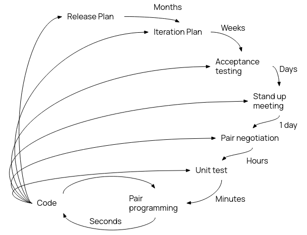

All processes involve some sort of specification, design and implementation, testing, and evolution (maintaining)
Two main types of development: plan driven and agile
Plan driven: everything is planned and fixed in advance. Inflexible.
Agile: Incremental planning, more adaptable to change.
Plan-Driven
Waterfall Model
Invented in 1970, strictest of all plan driven models.
If a change is required, the waterfall model must restart. Incredibly inflexible and in practice not completely followed.
Requirements: most customer focused, involves identification of resources, distribution of work.
Design: design document generated, should be really detailed so implementation is not hard.
Implementation: only when design doc is finished. Everything written should be unit tested.
Verification/Integration: Most group focused - putting all parts of system together, making sure they work.
Maintenance: Hand over program and documentation. Offer maintenance, which is also done via waterfall.
Waterfall is good when requirements are understood and will not change. Few constraints on location and teams size (development distributed and isolated) and each component can be first tested in isolation.
Waterfall is not good as the client has to wait a long time for results, and changes are difficult to accommodate, and there is a problem of software tech deprecation over the entire years-long development timespan.
Inremental Development
A more flexible system than waterfall.
Each iteration is still planned like waterfall, spec updated between iterations (not rewritten).
(+) cost of accomodating change much reduced, and user gets software quicker, feedback is easier to get -- better (perceived) value for money
(+) user inclustion in acceptance testing, can even install system before the final version.
(-) very difficult to estimate overall cost of development of such a system.
(-) difficult to maintain consistency between versions - poor design choices early on hamper later feature additions. Spaghetti code.
Reuse-Oriented Sofware Engineering
Why reinvent the wheel? Instead, many devs rely on "off-the-shelf" / open source premade components, and just writes the glue code to tack them together. Common off the shelf (COTS) systems.
Compromises on features with client has to be made, but tradeoff is that program is banged out in record time.
Software Spec
To understand and define what services are required
To identify limits in feasibility - "requirements engineering", producing requirements document.
Agile
Agile development is about rapid development: interleave spec, design, and implementation, and develop the system as a series of evolving prototypes.
Focus on code over design, develop as you go. Aim for speed, and flexibility.
Often has the short stand up meeting concept.
Major principles of Agile are
Customer involvement - cannot respond rapidly to changes without rapid feedback
Incremental delivery - have prototypes, and update spec for next iterations
People not process - have highly skilled coders that know what they're doing. Share knowledge and improve processes
Embrace change - open to additions, and design system to accommodate change (hard)
Maintain simplicity - since there is a lack of good doucmentation, software must be simple and easy to understand for new members - "self commenting code" (lofty ideals)
Most companies spend more money on miantenance than actual development. Since agile prioritised development over documentation, this can be difficult to pick up and maintain later on.
Very flexible to requirements changes provided it's the original team doing it. Team losses hit harder in agile.
It is possible to mix plan-based and agile and pick and choose.
Extreme Programming
Incremental delivery with fast iterations. Automated tests to verify builds.
Code refactored constantly to maintain simplicity. Strong customer involvement, deliveries every few weeks.

Impractical if customer slow or hard to reach.
Incremental planning: requirements on "story cards", which are selected for inclusion based on priority.
Small releases: minimum functionality for release, with more stuff for future releases.
Simple design: only enough design to meet customer requirements, maintaining expandability - this is HARD
Test-driven development: write the tests for the feature before writing the feature to match the tests.
Refactoring: constantly refactor to improve code
Pair programming: work in pairs, one coding and the other checking and providing support. regularly swap.
Collective ownership: more than 2 people responsible for any one part of the codebase.
Continuous integration: integrate as soon as feature done
But also Sustainiable pace: avoid large amounts of overtime and overwork.
Onsite customer: have a customer rep on site for minimal response delay.
Extreme programming is very agile, but has the drawbacks of it too. Best suited for small, experienced teams.
Scrum
General method focused on iterative process, with three stages
Planning stage - general goals
Sprint cycle - each cycle is an implementation, 2-4 weeks but it varies
Project closure
There are daily meetings for progress.
Select the features needed with the customer, but build in isolation. The scrum master (i.e. team leader) interfaces between team and customer
Work is reviewed and presented at end of sprint cycle.
Requirements Analysis
Requirements are descriptions of what program should and shouldn't do. This enables devs to fulfil customer needs, and provides a basis for tests, requirements, and analysis.
2 parts: what is going to be built, and how is it going to be built.
Requirements bridge customer & developer, should be customer understandable, or at least
Have two requiremetns docs, a "C-facing" (customer facing) and a "D-facing" (dev facing), with differing amounts of technical detail. C-facing is usually written first. Crucially, there are no differences in requirements between the two.
Requirements should be specific and measureable. Not vague. Be aware of changing requirements.
C-facing reqs
D-facing reqs
System from user view
how it works in natural language
diagrams are always nice
list of constraints in operation
Detailed descriptions of functionality
Language, service, protocols, libraries, etc
Defines exactly waht must be implemented
The whole req doc must be: prioritised, consistent, modifiable, traceable (i.e. know where req came from, justification)
Each requirement must be: correct, feasible, necessary, unambiguous, verifiable
The MoSCoW order of priority is often used: Must, Should, Could, Won't, but there is an argument that if a requirement is "Won't", don't put it there in the first place?
Requirements elicitation requires interaction with stakeholders, and gather information about the project. Think through the conficts of interest. Then, get clarifications, go through 'em with a fine-toothed comb, and finally write down the document after finalising.
Team Organisation
The project manager makes sure everything is running smoothly and on time.
They are arguably the most stressful role, and is often the least technical and most people-oriented role.
They must track progress and help solve stuck situations, plan the project development.
They must manage the team, chase people up about work, etc.
And consider risks (to development or to team) and mitigations -- risk assessments. Considering when to sacrifice features if necessary.
The business analyst looks at organisational context of the project.
They identify stakeholders, activities, processes, etc
And understand the stakeholders' requirements. They do the requirements elicitation and documentation. Make sure everything is traceable and justified.
These guys must also: Review the test plan -- a good test plan can identify mistakes even before development, such as incompatibilities between modules. Bugs and defects should be triaged and prioritised.
Supervise project installation, deal with the "day 1 live trauma", and hand over software, and perhaps manage maintenance and support.
Reflect over what did well, what did poorly when closing down project. Archive and seal documentation.
Reward and recognise people for their achievements.
Throughout, accountability for code is important. Use version control, git blame exists for a reason. Git is good.
Very few projects succeed, why is this so? Well, there are a multitude of reasons, amongst them poor planning, requirements changing too much, high turnover, unrealistic deadlines, poor testing, and so on and so forth.
Project management is essential to making sure constraints are kept, to
Deliver software on time
Keep costs within budget
Deliver software that meets expectations
Maintain morale and productivity of team
Team success depends on three generic factors:
People: a mix of people with different motivations and skillsets
Organisation: individuals must be given opportunity to contribute
Communication: technical and managerial communication is essential
And four people factors:
Consistency: not making people feel undervalued
Respect: everyone has equal opportunity to contribute
Inclusion: all views should be considered (regardless of heirarchy)
Honesty: faking it will backfire unless you actually make it
People are motivated through satisfaction of their needs (something something heirarchy of needs).
Heirarchy is still important. Should the PM be the Tech lead? Or should it be someone else? Who will interact with stakeholders? How do we integrate people who are not in the same location? How can knowledge be shared?
Group organisation can be informal or heirarchical:
Informal: No strict heirarchy, decisions made by consensus. Can be successful if griup is highly competent.
Heirarchical: Defined leaders and management levels. Can work well in breaking down and delegating subproblems. Best when responsibilities are clear.
A cohesive team can establish their own quality standards, and actually follow them. Individuals will learn from and support each other, and people tend to work better.
Risk Management
Identification
Risks can be grouped into what areas they affect. Project risks affect the schedule or resources of the entire project. Product risks affect the final quality of the product. Business risks affect the organisation. Some risks can fall into multiple categories.
Project Risks include staff turnover, management change, hardware unavailability, requirements change, etc.
Prduct Risks include tool/library underperformance, the aforementioned requirements change, specification delays, size/complexity underestimates, etc.
Business Risks include technology changes and deprecation, product competition, etc.
There can be even finer category groups: such as Technology Risks, People Risks, Organisational Risks, Tool Risks, Requirements Risks and Estimation Risks.
Analysis
Consider each risk and its severity, this can then be grouped and prioritised
For example, you could have a rating Insignificant/Tolerable/Serious/Catastrophic.
Contingency
Once you have a prioritised risk list, a contingency plan for each risk must be made. First is avoidance: aim to reduce the chance of the risk even becoming reality, then comes minimisation: reducing damage if it goes wrong, and finally contingency plans: what to do if risk does occur.
This all goes into a risk assessment / risk register, which can be a docuemnt, or on a management platform, but somewhere accessible to management.
Project Management
The planning documents of a project should communicate all ideas, contingencies, organisation, etc to both the developers and the stakeholder.
Planning has three stages: (1) Proposal / pitch / bidding phase, (2) startup phase, and (3) periodic planning.
Scheduling is done through Gantt Charts, and critical path analysis algorithms for scheduing which tasks go first.
Estimation of costs and schedule however is really very easier said than done,
It often comes down to experience as to how to schedule a project correctly,
Or using some sort of algorithm to guesstimate the schedule.
Success is measured against how well the project meets the spec and existing expectations.
Design Patterns are solutions to common programming problems. They're modular blocks designed to make code more flexible, a design structure that achieves a purpose. You see them a lot in OOP, where most enterprise code is.
Design patterns all have 4 aspects: a meaninngful name, a description of the problem to solve, the solution, and a statement of the drawbacks.
They are generic blueprints, and it takes experience to know when to use them in the correct situations.
Creational Patterns
Factories
Creational Pattrns help with reducing the tedium of creating objects.
Imagine a bicycle race:
class Race {
public Race createRace() {
Frame frame1 = new Frame();
Wheel frontWheel1 = new Wheel();
Wheel rearWheel1 = new Wheel();
Bike bike1 = new Bike(frame1, frontWheel1, rearWheel1);
// repeat for every single other bike in the race...
}
This is bloody tedius. Plus if we were to extend from race:
class TourDeMartinique extends Race {
public Race createRace() {
// we need regulation bikes
// so we have to go through the whole rigamarole again of bike creation...
Frame frame1 = new RegulationFrameEx007();
Wheel frontWheel1 = new RegulationWheel1800F();
Wheel rearWheel1 = new RegulationWheel1800F();
Bike bike1 = new Bike(frame1, frontWheel1, rearWheel1);
// ...
}
it makes things even worse. Worse still, if we need to change something, then we would have to update the whole thing, which is error prone.
Instead, let's have methods which create objects for us, so we can have object creation all in one place -- this is the factory method
class TourDeMartinique extends Race {
Frame createFrame() { return new RegulationFrameEx007(); }
Wheel createWheel() { return new RegulationWheel1800F(); }
Bike createBike(Frame frame, Wheel front, Wheel back) {
return new Bike(frame, front, back);
}
}
especially helpful if these common method signatures are implemented in the Race class.
We could even pull this into its own class - a factory class.
class BicycleFactory {
Frame createFrame() { ... }
Wheel createWheel() { ... }
Bike createBike(Frame frame, Wheel front, Wheel back) { ... }
Bike createDefaultBike() { ... }
// etc.
}
It's a way to get around the limitations of statically typed OOP constructors.
Advantages:
Cutting down on repeated code
Adding new variations, scenarios is easier
Making changes is easier
Easier to test
Disadvantages:
Lots of boilerplate classes
Factory is linked to its produced class, thus when we update that class, we must update all the factories -- still some sort of cascading update.
Builders
When an object has many attributes, especially when you want to just forget about some of them, writing constructors is hard. We'd need to consider all the variations of what we want, what constructors we need, and if there are like two dozen different attributes, wah.
Builders are the pattern to help with this issue. Builders abstract a constructor into a series of substeps, each of which "builds" an individual component, and the object is created with a final build call.
Builders are not factories, they are more flexible, and designed for large classes with many optional parameters. Their goal is to avoid long tedius constructors.
(Note: Lombok for java has the annotation @Builder)
Advantages:
More control over construction
Can reuse construction code for different instances
Single responsibility principle one bit of code responsible for one thing. One place deals with construction.
Disadvantages:
Like factories, needs large number of new classes and boilerplate
Code becomes longer, construction still complex, just modular now!
Prototypes
Another object construction method, where we create a prototype object and then clone it. e.g.
class Bike {
Object clone() { ... }
// ...
}
class Race {
Bike prototye;
public Race(Bike prototype) {
this.prototype = prototype;
}
public Race createRace() {
Bike b1 = (Bike) prototype.clone();
//...
}
}
Advantages:
Don't need to make another subclass just to create an object
Remove heavy initialisation for cloning
Produce complex objects easily
Keep class heirarchy simple
Disadvantages:
Circular references are difficult
Might still have to do heavy update code on cloned objects
Structural Patterns
Proxy Pattern
The proxy pattern allows us to create placeholders for other objects.
Reference an entity without having to load the entire thing (such as in previews)
Used for anything which needs a "load on demand"
public interface Graphic {
void draw();
}
public class ImageProxy implements Graphic {
private String fileName;
private Image content;
public ImageProxy(String fileName) {
this.fileName = fileName;
content = null;
}
public void draw() {
// only load the content when it is needed
if (content == null) content = new Image(fileName);
// the actual image class will have a draw function
content.draw();
}
}
There are many different types of proxy, like:
Virtual Proxy (lazy initialisation): for something that is resource heavy, put off loading until last minute.
Protection Proxy: provides access control to object.
Remote Proxy: offers functionality which is off-site, and handles all networking.
Logging Proxy: to keep track of accesses and requests on the side.
Caching Proxy: save contents/results of object for a short time, useful if object is computationally or networkly intensive.
Proxy provides availability even if object not available
New proxies can be made without changing service
Disadvantages:
Added complexity
Adds another step in getting response -- overhead concerns
Decorator Pattern
Suppose we want to have an object that does multiple things. Say, we have a message bot, that needs to send to several different platforms at once. Well, given a base Message class, for each platform we would have to subcass: FacebookMessage, TwitterMessage, DiscordMessage, etc, etc.
But what if we want to send to multiple at once? Then we'd need to do all the combinations and ...
Wah.
Decorators are a way around this, by wrapping objects so they can have dynamic behaviour at runtime. They're the @Data type things you see in Java.
A wrapper is an outside "packaging class" that has all the functionality of the inner class, but will do some extra logic before calling original methods.
At runtime, we can now check what options the client has picked, and wrap our message object in all the necessary decorators.
Decorators and Proxies are very similar in method, but are there for different things.
Advantages:
Extend behaviour without adding several subclasses
Responsibilities become dynamic at runtime
Combinable, unlike subclasses
Promotes single responsibility
Disadvantages:
Removing wrappers later is difficult
Hard to implement in a way that isn't order dependent
Initial code layout can look messy - having used Spring... can bloody confirm.
Adaptor
As name implies, allows output from one object to be used by another.
If we update a class that is used everywhere, we would need to make sweeping changes across entire code base, which is really error prone and hard to do. Alternatively, stick an adaptor between the object and everything else.
Advantages:
Promotes single responsibility
New adaptors can be introduced without heavy refactoring
Disadvantages:
Increased code complexity
Depending on size of codebase, converting original object might just be easier
Flyweight
The above is all about wrapping objects to add more functionality.
What if we don't want to do that, rather just rearrange the objects so they're nicer?
The flyweight pattern is a design pattern that allows us to get more objects in memory. They work best when objects share common properties which are also huge in size.
Essentially: find all the data that is the same over a bunch of objects, and just extract that into a static class.
Suppose we have this NPC:
class Orc {
String name;
int health;
Weapon weapon;
NPCAI style;
Map texture;
// methods...
}
But the texture map is huge, because this is a really detailed game. If every orc has its own copy, we can't store many of them. But this texture is common to all orcs (as well as a few other things), so might as well split this into
class OrcData {
static NPCAI style;
static Map texture;
static Weapon weapon;
}
class Orc {
String name;
int health;
OrcData data;
}
And so now we only store one copy of OrcData.
Advantages: Saves memory, potentially drastically
Disadvantages:
Some data may need to be recalculated every call -- saving memory for increased compute time
Complex code
Behavioural Patterns
Concerned with how objects communicate. Majority of object's behaviour is communication.
Object can eithe change its own internal state, or interact by passing data to another object. The latter is what we care about.
Iterator Patterns
I think we've all used these? All default java data structures implement Iterator so we can do for (Object i : listOfObjects) { ... }
Advantages:
Single responsibility principle
New iterators can be introduced without heavy redesigns
Iterate multiple ways in parallel
Can even pause iteration and carry on later
Disadvantages:
Not always necessary
Less effective for highly specialised objects
Observer patterns
Allows an object's dependents to be automatically notified of a change.
This can work as a push model (sender sends) or a pull model (receiver periodically asks).
Often referred to as Producer/Consumer or Publisher/Subscriber.
On the producer side, subscribers should be able to be added and removed from notification lists. Can have a different notification method for each type of notification publisher sends. Then, when the event occurs, iterate through all subscribed and send.
This way removes the need for subscribers to constantly check - busy waiting is bad and is a waste of resources.
Subscriber lists must be opt-in.
By maintaining lists we reduce the number of subscribers that need to receive data and do not bother the rest of the system unnecessarily.
Advantages:
New subs can be added without needing to redesign publisher
Relationships between objects can change at runtime
Disadvantages:
Subscribers notified in possibly random order
Memento Pattern
Save and Restore objects without revealing details of implementation.